01 — Evdeki Ses Nedir?
İçinde bekleyen bir ses, bir yön, bir yaratım ya da görünür olmayı isteyen bir parça olduğunu hissediyorsan — ama bunu zorlayarak, performansla ya da kendini düzeltme baskısıyla dışarı çağırmak istemiyorsan —
bu alan senin için açıldı.
Bu bir vokal eğitimi değil. Sesin çıkarken kendi bedeninde kalabilmen için tasarlanmış bir alan.
Ses sadece ses değil.
Sesin değiştiğinde — ilişkinde, yaratımında, görünürlüğünde kendinde kalma biçimin değişmeye başlar.
Ses, temas ve ifade üzerine 5 haftalık canlı destekli bir süreç.
10 kişilik küçük grup. Çevrim içi. Türkçe.
02 — Tanıma
03 — Çerçeve
Birçok kadın küçük yaşlardan itibaren şunu öğrenir:
Ve beden bunu otomatik hâle getirir.
Cümle daha çıkmadan —
Bu bir karakter zayıflığı değil.
Bedenin yıllarca öğrendiği bir organizasyon biçimi.
Ama aynı organizasyon şimdi seni
Ses çıkmadan hemen önce ne oluyor? Cümle gelmeden önce beden nerede? Görünür olmadan önce sistemin neyi korumaya çalışıyor? Ve sen bütün bunların içinde kendini terk etmeden nasıl kalabilirsin?
Evdeki Ses burada başlar.
Sesi zorlamadan önce — sesin nerede tutulduğunu görmekle. Organizasyonu fark etmekle. Ve küçük ama gerçek adımlarla hayata taşımakla.
Beş hafta boyunca bu hat, her hafta farklı bir katmandan geçer.
Başvuru formu açık. On kadınla sınırlı.
→ Forma göz atHenüz emin değil misin? Sesin nerede tutulduğunu önce kendin keşfet.
→ Ücretsiz analizi başlat04 — Program akışı
Program başlamadan önce kendi sistemini gözlemlemeye başlıyorsun.
Hazırlanmak için değil.
Temas kurmak için.
Ses sadece boğazdan çıkmaz. Ayaktan, karından, diyaframdan, sinir sisteminin o andaki organizasyonundan çıkar.
Bu hafta sese değil, ses çıkmadan önce bedenin ne yaptığına bakıyoruz.
Bu hafta amaç güçlü çıkmak değil.
Önce içeride nerede kaybolduğunu görmek.
Birçok kadın ne istediğini bilmediği için değil, istediğini söylediğinde ne olacağından çekindiği için susar.
Bu hafta istek, arzu, sınır ve suçlulukla karışan ifade alanına bakıyoruz.
Burada amaç herkese karşı daha sert olmak değil.
Kendi içindeki yönü duyabilmek ve onu küçük, gerçek cümlelerle ifade edebilmek.
Görünür olmak sadece kamera karşısına geçmek değil.
Bir odada fikrini söylemek de görünürlük. Yaratımını başkalarının önüne koymak da görünürlük. İlişkide gerçeğini söylemek de görünürlük.
Bu hafta görünürlük karşısında bedeninin ve sesinin ne yaptığına bakıyoruz. Saldırmadan. Küçülmeden.
Birçok insan ses çıkarmaktan değil, sesinin gerçekten duyulmasından çekinir.
Çünkü duyulmak bazen çıplak hissettirir.
Biri seni gerçekten dinlediğinde bedenin kapanabilir. Konuyu değiştirebilirsin. Fazla açıklamaya başlayabilirsin. Sesini hemen geri toplayabilirsin.
Bu hafta sesin temas kapasitesini çalışıyoruz. Sadece konuşmak değil. Sadece ifade etmek değil. Duyulurken de bedende kalmak.
Duyulmak her zaman tehlike değil. Duyulmak, temas olabilir.
Beden. Nefes. Zemin. İstek. Görünürlük. Temas.
Şimdi bunların hepsi bir arada.
Canlı ses performans sesi değil. O anda bedenle, duyguyla, nefesle, gerçekle temas hâlinde olan ses.
Bazen daha sade olur. Bazen daha alçak. Bazen daha direkt. Bazen daha sıcak. Bazen daha sessiz — ama daha yerinde.
05 — Her hafta seni bekleyenler
Bu program bilgiyle dolup taşman için değil. Az ama etkili pratiklerle kendi sesinle gerçek temas kurman için.
Canlı grup buluşması
Sesin başka seslerle karşılaştığı, pratiğin gerçek zamanlı olduğu alan.
Haftalık tema videosu
O haftanın odağını neden çalıştığımızı ve bedende nasıl hissettirdiğini açar.
Rehberli uygulama videoları
Ses, nefes, hareket ve ritim üzerinden — sadece izlemek değil, bedenle yapmak için.
Sesli pratik kayıtları
Yalnız başına, kendi hızında, istediğin zaman dönebileceğin rehberli sesler.
Haftalık çalışma dosyası
O haftanın temasını kendi hayatında görmek için sorular — içe bak, fark et, yaz.
Günlük hayat pratikleri
Çalışmayı gerçek bir konuşmaya, gerçek bir ana taşıyan küçük dokunuşlar.
Entegrasyon kaydı
Haftayı kapatmak, bedene dönmek ve gördüklerini sindirmek için rehberli bir ses.
Bu format sana göre hissettiriyorsa —
→ Başvuru formunu doldur06 — Ne değişebilir?
Bu program sana bir anda sınırsız özgüven vaat etmiyor.
Ama çok daha temel bir şeyi çalışıyor: Kendini ifade ederken bedeninde kalma kapasiteni.
Bu kapasite büyüdüğünde —
Bunlar küçük görünebilir.
Ama bir kadının hayatında bazen en büyük değişim şudur:
Kendi cümlesini kurar.
Kendi sesini duyar.
Ve artık onu hemen geri toplamaz.
07 — Bu alan senin için mi?
Kendi sesini taşıyabilen bir kadın olmak istiyorsan.
Bu bir dönüşüm performansı değil. Daha gerçek bir başlangıç.
Sesin sadece çıkması değil. Sende kalması.
Burada cilalı bir persona kurmuyoruz.
Daha gerçek bir alan kuruyoruz.
Kurucu Grup
Bu çalışma ancak gerçek temas mümkün olduğunda işe yarıyor.
Belki de aradığın şey daha güçlü bir ses değildir.
Daha evde bir ses.
Kendi sesine yer açmaya hazırsan —
→ Başvuru formunu doldur